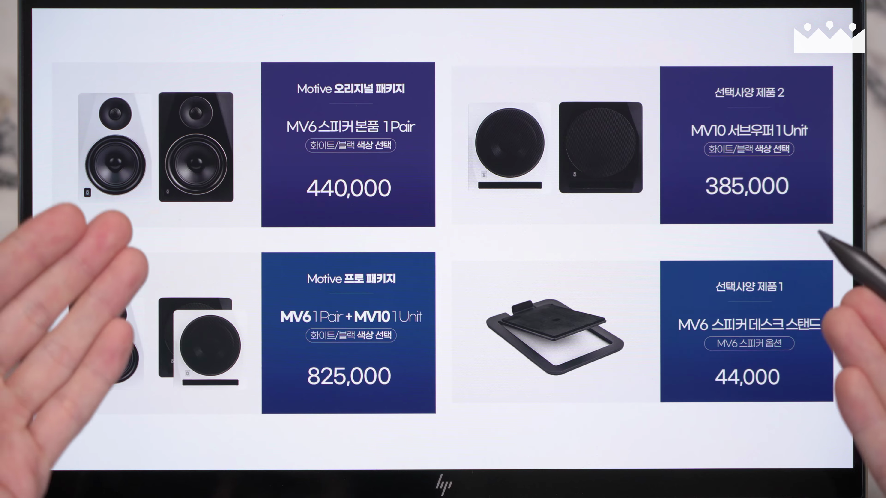
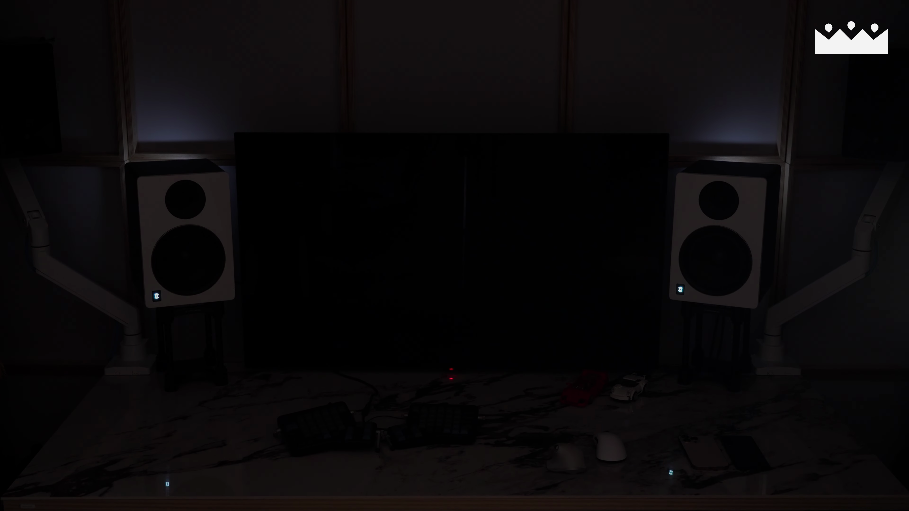

이번 블로그 포스트에서는 가락전자의 2.1채널 액티브 스피커에 대한 리뷰를 진행하며, 특히 서브우퍼를 활용한 효과적인 음향 세팅 방법에 대해 자세히 살펴보겠습니다. 스피커의 성능뿐만 아니라 실질적인 사용 환경에서의 공진 문제를 해결하는 방법도 논의합니다.

가락전자 스피커 소개
- 2.1채널 액티브 스피커 소개
- 모니터 성향의 스피커
- 리뷰의 한계와 서브우퍼 활용 중요성
오늘 소개할 가락전자의 2.1채널 액티브 스피커는 모니터 성향의 제품으로, 기본적인 음질은 잘 측정되지만 세부적인 리뷰는 어려움이 있습니다. 그래서 실제 사용 환경에서 서브우퍼 활용 방법을 중점적으로 다루겠습니다.

가락전자의 역사와 소비자 시장 진출
- 1977년 설립된 B2B 전문회사
- 2023년 소비자용 스피커 출시
- 소비자의 요구에 대한 반영
가락전자는 1977년에 설립된 B2B 전문 방송 시스템 제작 회사로, 2023년에 처음으로 일반 소비자용 스피커를 출시했습니다. 제품 개선에 대한 피드백을 적극 반영하고 있습니다.

제품 사양과 가격
- MV6과 MV10 스피커 소개
- 가성비의 우수성
- 80만원대 2.1채널 시스템 구성
MV6과 MV10은 각각 6인치와 10인치 우퍼를 장착한 액티브 스피커로, 가성비가 뛰어난 가격대에 출력이 훌륭합니다. 이 둘을 합쳐 80만원대의 강력한 2.1채널 시스템을 구축할 수 있습니다.

스피커 성능과 리버전
- 최신 리버전의 음질 개선
- 톤 밸런스 조절 기능
- 고음과 저음 조정
MV6은 리버전을 통해 고음이 더욱 균형 잡히고, 톤 밸런스를 조절하는 기능을 지원하여 저음과 고음을 각각 조절할 수 있습니다. 이러한 기능이 스피커의 사용성을 더욱 향상시킵니다.

스피커의 소음 문제
- 화이트 노이즈 문제
- 넉넉한 공간에서의 사용 추천
- 수평과 수직 지향성
MV6 스피커는 1미터 거리에서도 화이트 노이즈가 들리기 때문에, 책상 위 같은 가까운 거리에서 사용 시 불편할 수 있습니다. 따라서 넓은 공간에서 사용하기를 권장합니다.

서브우퍼 활용법
- 서브우퍼의 배치와 위상 조정
- 룸 모드 제어
- 스위트 스팟 중요성
서브우퍼를 활용하여 저음 특성을 정밀하게 조절할 수 있는 방법에 대해 논의했습니다. 서브우퍼를 어떻게 배치하느냐에 따라 음상이 안정적으로 형성될 수 있습니다.

측정 마이크의 중요성
- 스피커 세팅에 측정 마이크 필요
- UMIK-1과 REW 프로그램 소개
- 실제 사용법 설명
스피커 시스템의 올바른 운용을 위해 측정용 마이크를 사용하여 방음 및 음질을 개선하는 방법을 추천합니다. USB 측정 마이크 UMIK-1과 무료 프로그램 REW를 통해 손쉽게 스피커 세팅을 할 수 있습니다.

마지막 결론
- 가락전자 스피커의 특징 요약
- 서브우퍼 활용의 장점
- 올바른 스피커 세팅 중요성
가락전자의 2.1채널 스피커는 가격 대비 성능이 우수하며, 서브우퍼를 적극 활용하여 최적의 음량을 극대화할 수 있습니다. 또한, 측정 마이크를 활용한 세팅이 필수적임을 강조합니다.
Tags: #가락전자 #2.1채널 스피커 #서브우퍼 #스피커 리뷰 #음향 세팅 #B2B 스피커 #모니터링 스피커 #가성비 스피커 #스피커 측정 마이크 #UMIK-1 #REW 프로그램